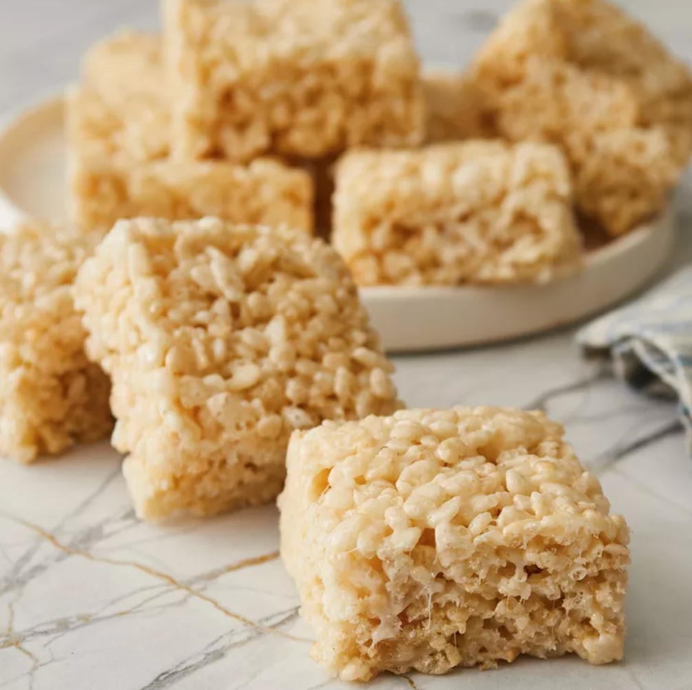

Rice Krispies

Delicious Rice-Krispies from the comfort of your house!
By buying this ingredients and following these steps, beautiful girls named Sofia Jimenez Cruz will be able to make the most delicious rice-krispies at home with their very handsome boyfriends named Ivan Berezin!
*it might be easier to just buy rice krispies*
Ingredients
- 1/4 cup butter
- 4 cups miniature marshmallows
- 5 cups crispy rice cereal
Steps
- Melt butter in a large saucepan over low heat; add marshmallows and stir until melted and well combined. Cook 2 minutes longer, stirring constantly. Remove from heat.
- Stir in crispy rice cereal until well coated.
- Press mixture evenly and firmly into a buttered 9x13-inch pan using a buttered spatula or waxed paper. Cut into 2-inch squares when cool.
Return to top
Return to home page